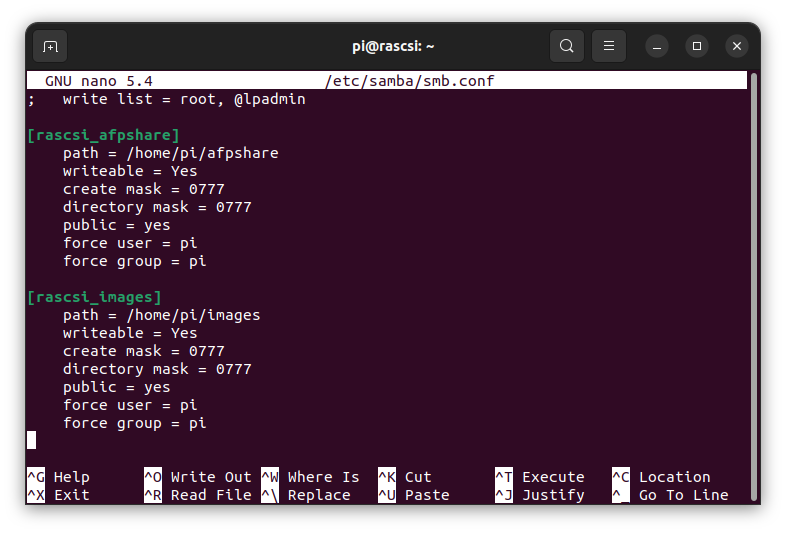
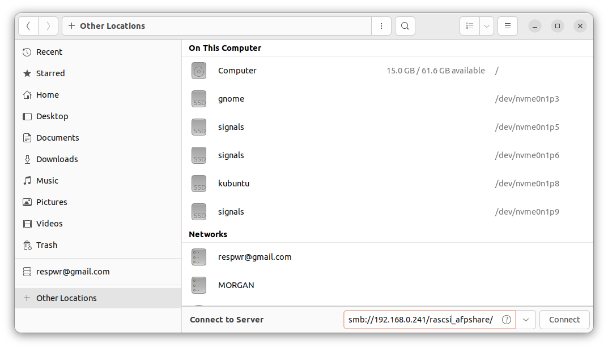
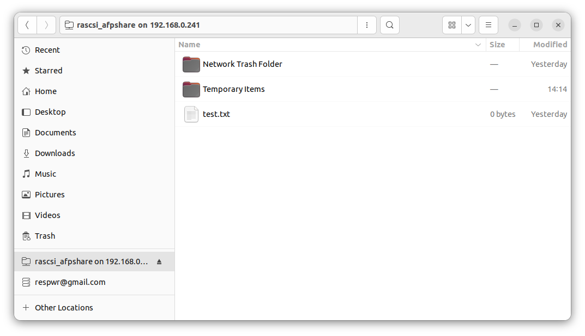

Samba network file sharing for linux install
Install libraries
sudo apt install samba samba-common-bin
Add desired share folders to smbd.conf file
sudo nano /etc/samba/smdb.conf

Restart samba
sudo systemctl restart smdb
From a linux computer file window, open "Other Locations"

